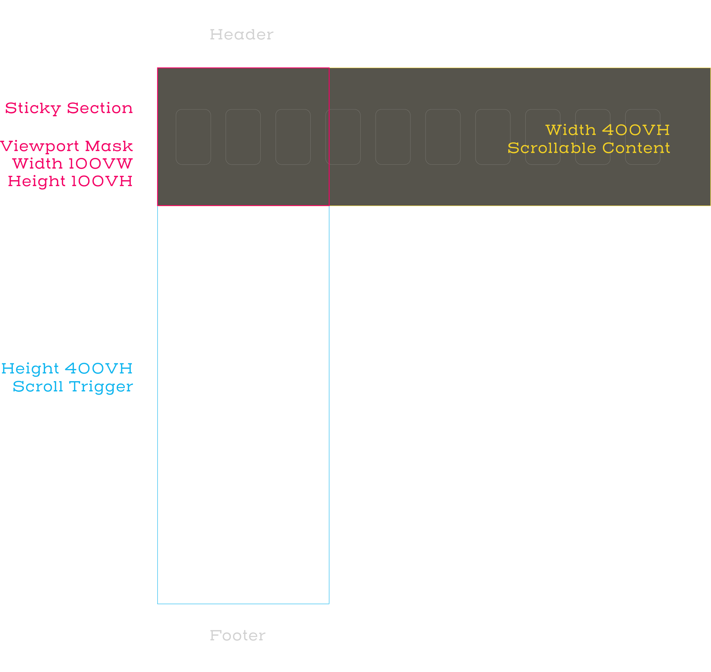

The width of the content div is equal to the height of its parent section. The parent section is used as a trigger and controller for the horizontal scrolling of the content div. Having those two elements the same scrollable size makes the feeling of the scrolling natural. By shortening or enlarging the Scroll Trigger div, you can accelerate or decelerate the horizontal scrolling effect.
